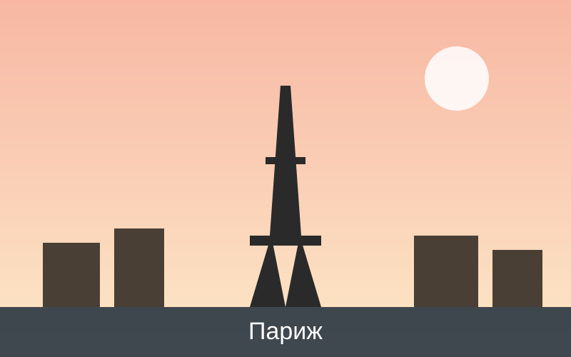

Особисті історії
Ми сиділи на набережній Сени, ділили багет на трьох і слухали вуличного скрипаля. Здавалося, що час зупинився.
Париж зустрів нас дощем і запахом свіжих круасанів. Вечірня Ейфелева вежа, яка спалахує вогнями, була саме такою, як у мріях.

Ейфелева вежа, Лувр, собор Нотр-Дам, Монмартр і Тріумфальна арка — місто, у якому хочеться ходити пішки цілими днями.
Круасани, багети, сир і вино, макарони з маленьких кондитерських та цибулевий суп. Сніданок у паризькому кафе — окрема традиція.
Мистецтво, мода і кіно. Вуличні художники на Монмартрі, музеї на кожному кроці та вечірні пікніки на березі Сени.
Ми сиділи на набережній Сени, ділили багет на трьох і слухали вуличного скрипаля. Здавалося, що час зупинився.